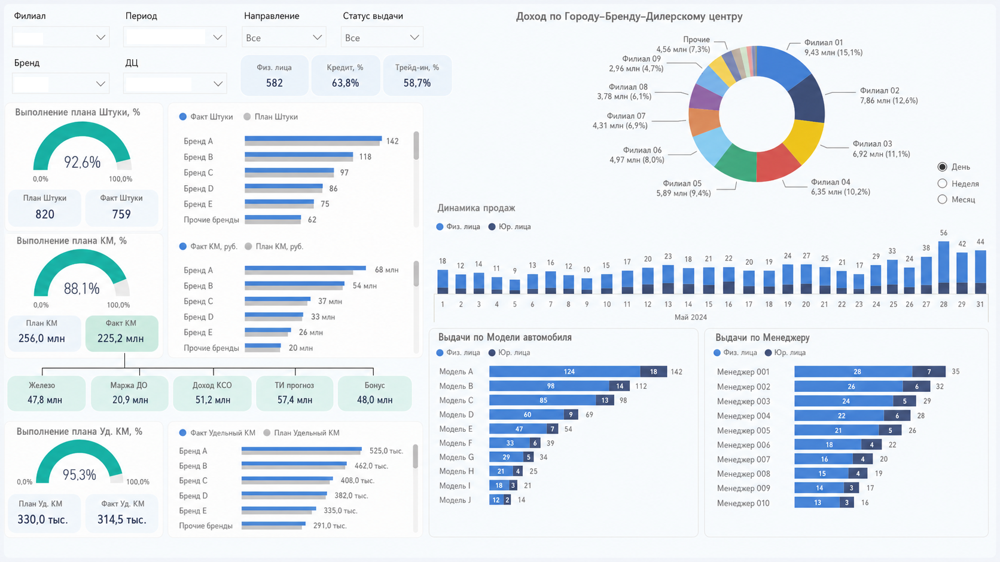
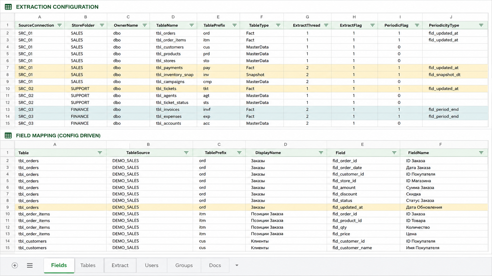
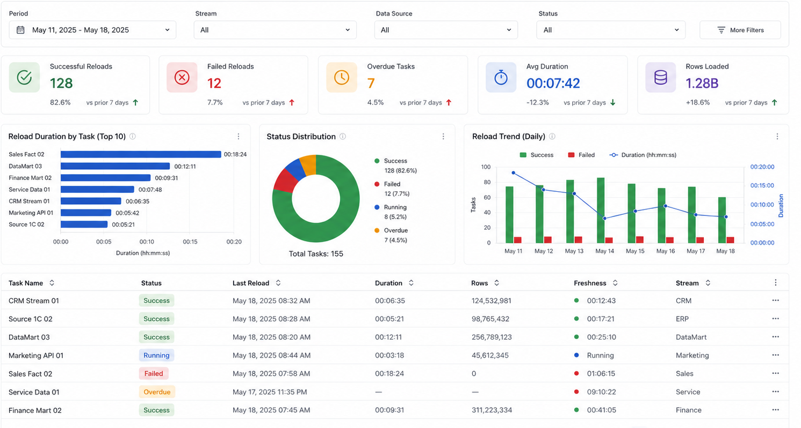
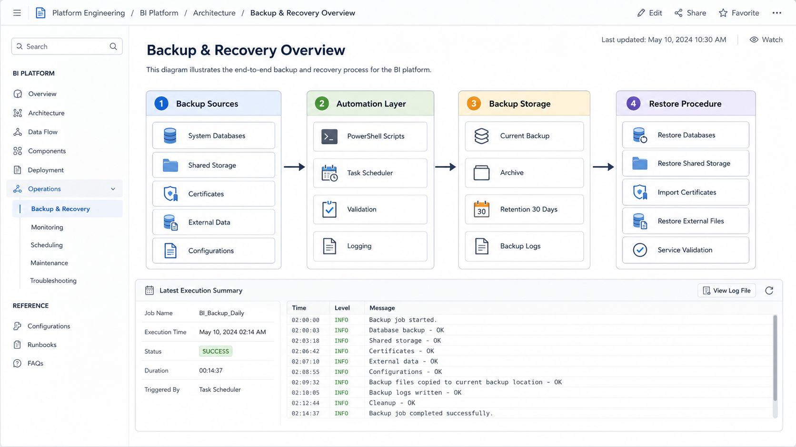

Qlik Sense · Power BI · ETL · QVD · SQL · REST API
Vyacheslav Dmitrov
Senior Qlik Sense Developer / BI Platform Engineer
I develop BI applications and data-loading pipelines. I integrate data from 1C, SQL databases, CRM systems, REST APIs and Google Sheets, and build QVD layers, data models, Section Access, monitoring and backup procedures for Qlik Sense.
Professional profile
About me
I have worked in BI since 2021, developing Qlik Sense and Power BI applications, data-loading scripts, data models and technical mechanisms for BI platform support.
I integrate data from 1C, SQL databases, CRM systems, REST APIs, Google Sheets and file-based sources. In Qlik Sense, I work with Qlik Script, QVD, Set Analysis, mapping tables and Section Access.
My responsibilities include requirements analysis, report development, calculation validation, reload support, incident analysis and backup of Qlik Sense components.
What I do
- Clarify requirements and define business metrics
- Connect and validate data sources
- Develop ETL scripts and QVD layers
- Build data models and application interfaces
- Configure Section Access
- Diagnose application and reload errors
- Develop backup and recovery procedures
Technology stack
Skills
Technologies and tasks I work with in current and completed projects.
BI Development
Data Integration
BI Engineering
Business Collaboration
Practical experience
Selected case studies
The screenshots use demonstration names and synthetic values. The screen structure and solution logic have been preserved.

Case study 01
Automotive dealership management report in Power BI
Objective
Combine sales, target achievement, revenue and vehicle delivery metrics in one report, with analysis by period, branch and business area.
Implementation
I developed a Power BI report with filters and interconnected visualizations. The report includes unit and financial plan-versus-actual metrics, daily trends, and breakdowns by brand, model, dealership and sales manager.
What is shown in the screenshot
Period and organizational filters, KPI cards, plan-versus-actual indicators, revenue structure, vehicle delivery trends and rankings by model and sales manager.
Power BI
DAX
Power Query
Excel
Plan vs Actual
Management Reporting

Case study 02
Extraction and field-mapping management through Google Sheets
Objective
Move table lists, loading parameters and field-renaming rules from individual Qlik scripts into a centralized configuration file.
Implementation
The Qlik script reads configuration sheets stored in Google Sheets. An extraction flag determines whether a table is loaded. Additional parameters define the processing stream and periodic or incremental loading scenario. The Fields sheet stores mappings between technical field names and user-facing labels.
What is shown in the screenshot
Source and table configuration, extraction flags, incremental-load parameters, prefixes, table types and field-renaming rules.
Google Sheets
Qlik Script
Config-driven Extraction
Field Mapping
Incremental Load
QVD

Case study 03
BI reload monitoring and data freshness control
Objective
Consolidate information about data-loading tasks in one technical interface, including execution status, last reload time, duration, processed row count and data freshness.
Implementation
Designed a monitoring structure for data streams and reload tasks. Each task can be reviewed by execution result, duration, loaded row count, last successful update and deviation from its expected schedule.
Additional views provide analysis of reload duration, status distribution and changes in operational metrics over time.
What is shown in the image
KPIs for successful, failed and overdue reloads, average duration, processed row count, status distribution, reload trends and a detailed task-status table.
Qlik Sense
Reload Monitoring
ETL Monitoring
Data Freshness
Data Quality
Incident Diagnostics

Case study 04
Qlik Sense backup and recovery framework
Objective
Combine backup of critical Qlik Sense components into a controlled process and define the sequence of actions required to restore the platform after a critical failure.
Implementation
Developed PowerShell scripts for backing up PostgreSQL system databases, QSShare, certificates, external directories and configuration files.
Added operation logging, result validation, current and archived backup storage, retention rules and a structure suitable for scheduled execution.
Prepared a documented recovery sequence covering databases, shared storage, certificates, external files and service validation.
What is shown in the image
Backup sources, the PowerShell automation layer, backup-storage structure, retention policy, recovery sequence and an example execution log.
Qlik Sense
PostgreSQL
PowerShell
QSShare
Backup
Disaster Recovery
Development workflow
BI solution workflow
A typical set of tasks, from connecting a data source to publishing and supporting a BI application.
Sources
1C, CRM, SQL, REST API and Google Sheets
Extraction
Connectors, SQL queries, REST APIs and files
QVD layers
Storage, transformations and business rules
BI applications
Data models, metrics and visualizations
Access
Section Access, roles and organizational scope
Platform operations
Career path
Experience
2021 — Present
BI Developer / BI Analyst
FRESH AUTO
Development and support of Qlik Sense and Power BI applications for sales, service, finance, marketing and other business units.
- Qlik Sense, Power BI and data models
- Integrations with 1C, SQL, CRM and REST APIs
- ETL scripts and QVD layers
- Section Access and data access controls
- Reload monitoring and diagnostics
- Backup of Qlik Sense components
2020
Software Development Intern
Cetera
Front-end layout, bug fixing and website support using WordPress, Joomla, CeteraCMS and 1C-Bitrix.
2015 — 2020
Analytics Department Specialist
DTEK
Work with 1C, Excel, Power Query and Power Pivot, preparation of recurring reports, calculation of operational metrics and user training.
- 1C administration and data control
- Excel, Power Query and Power Pivot
- Analytical reporting
- User training
Education
Education and training
Software Engineering
National Mining University
Building Analytical Reports with Qlik Sense
Specialist Training Center at Bauman Moscow State Technical University
Power BI: Development and Visualization
Eduson Academy
Contact
Discuss a BI project
I am available for project-based work involving Qlik Sense, Power BI, data-source integrations, BI solution support and platform development.